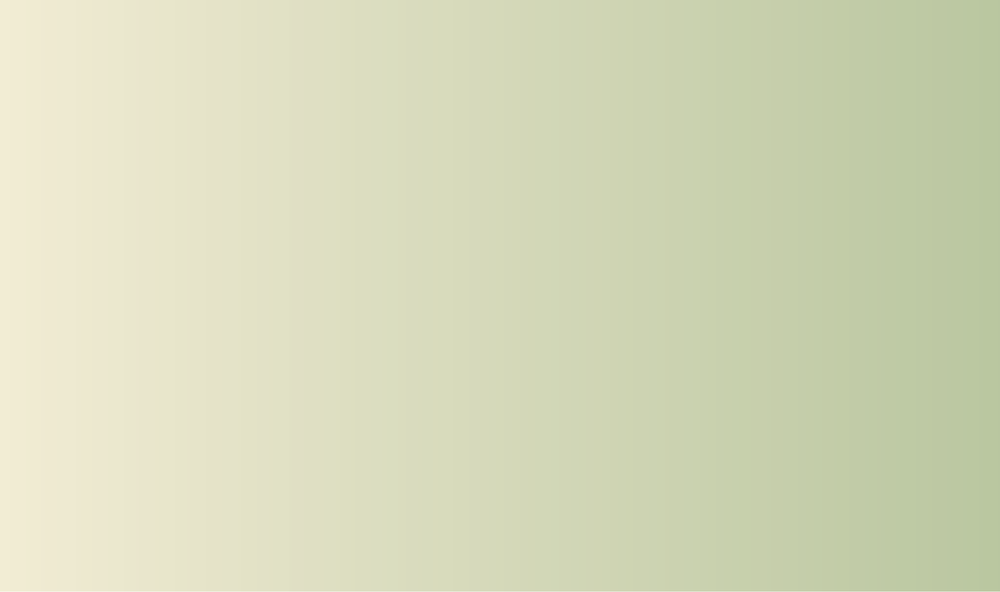

Estudio de diseño · Buenos Aires
En cada proyecto hay algo que espera ser descubierto.
Una identidad, una historia, una intención o una forma de mirar el mundo que todavía no encuentra cómo hacerse visible.
En Velar trabajamos junto a personas, marcas e instituciones para reconocer aquello que las hace únicas y transformarlo en experiencias de diseño claras, sensibles y coherentes.
No diseñamos para inventar.
Diseñamos para sacar a la luz.